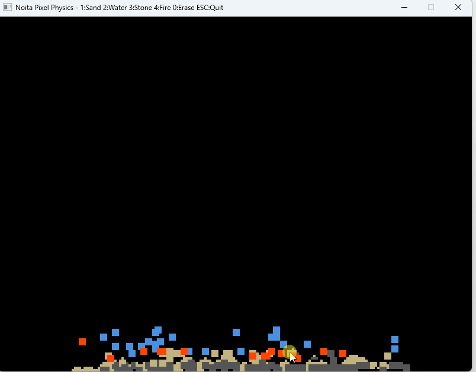
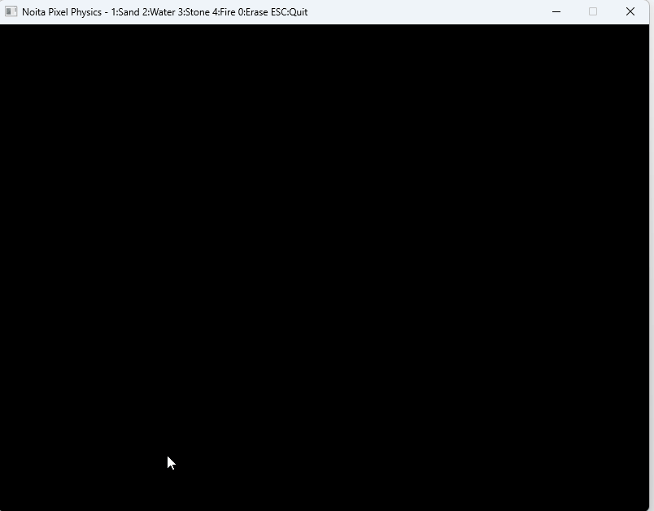
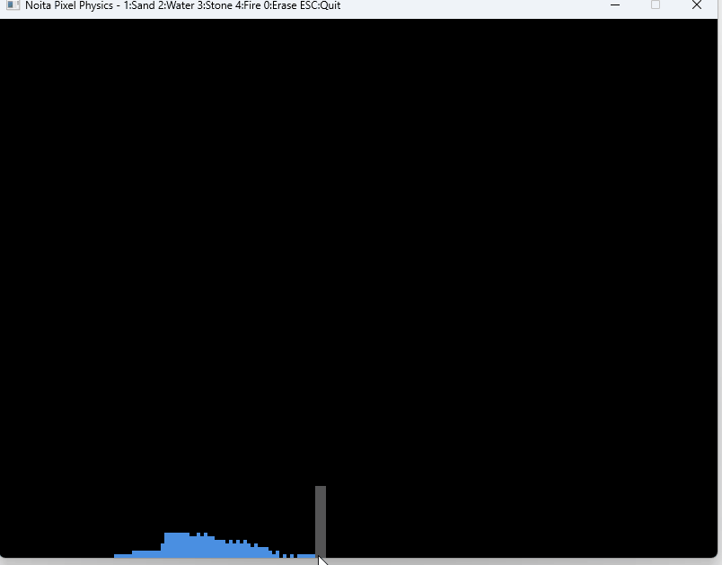
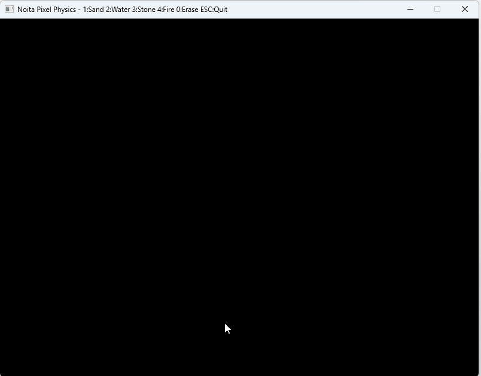
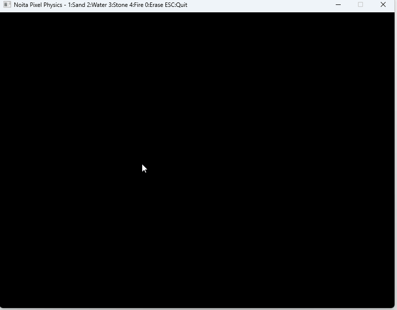

Noita의 픽셀 물리 시뮬레이션 - 기본 원리부터 이해하기

모래, 물, 불, 증기가 상호작용하는 픽셀 물리 시뮬레이션
Unity나 Unreal의 Rigidbody, 중력, 충돌 처리...
공이 떨어지고, 박스가 쌓이고, 차가 뒤집히는 것들.
보통 이런 물리는 "강체 물리" (Rigid Body Physics)라고 부름.
화면의 각 픽셀 하나하나가 물리적 성질을 가진다.
강체 물리는 "물체 단위"로 움직이지만,
픽셀 물리는 "픽셀 단위"로 움직인다.
모래, 물, 연기, 불 같은 것들은 "물체"가 아니라 "입자 집합"이니까.
강체 물리로는 표현하기 어려운 유체(Fluid)나 입자(Particle) 현상을 자연스럽게 표현할 수 있음.
800 × 600 = 480,000개
그렇다면...
60 FPS로 돌리려면 초당 28,800,000번의 연산이 필요함.
이게 픽셀 물리의 근본적 문제.
두 가지 핵심 전략:
1. 간단한 규칙으로 각 픽셀 처리 시간 최소화
2. 필요한 곳만 계산 (청크 시스템)
| 문제 | 해결 방법 |
|---|---|
| 픽셀 개수가 너무 많다 | 변화가 없는 영역은 건너뛰기 (청크 시스템) |
| 각 픽셀 계산이 복잡하면 느리다 | 간단한 규칙만 적용 (Cellular Automata) |
| 중복 계산이 발생한다 | 업데이트 순서 제어 + UPDATED 플래그 |
직역하면 "세포 자동화".
격자(Grid)의 각 셀(Cell)이 간단한 규칙에 따라 자동으로 상태를 바꾸는 시스템.
예를 들어, 모래의 규칙:
이게 전부야.

위 3줄의 규칙만으로 모래가 자연스럽게 산 모양으로 쌓임
그게 Cellular Automata의 핵심이야.
개별 규칙은 단순하지만, 수십만 개가 동시에 작동하면
복잡하고 자연스러운 현상이 나타남.

복잡해 보이지만, 각 픽셀은 여전히 단순한 3줄 규칙만 따름
그럴 필요 없어.
화면의 대부분은 "변화가 없는 영역"이니까.
예를 들어, 바닥에 쌓인 모래 더미는 더 이상 움직이지 않음.
빈 공간도 마찬가지로 계속 비어있음.
이런 영역은 계산할 필요가 없어.
화면을 16×16 블록(청크)으로 나눔.
각 청크마다 "활성" / "비활성" 상태를 관리.
1. 픽셀이 이동하면 → 해당 청크 + 주변 청크 활성화
2. 10프레임 동안 변화가 없으면 → 비활성화
정적인 영역이 많으면 90% 이상 연산 절약 가능.
예: 화면의 80%가 비활성이면 → 48만 개 중 9.6만 개만 계산
| 방법 | 프레임당 연산 | 비고 |
|---|---|---|
| 전체 픽셀 확인 | 480,000개 | 느림 |
| 청크 시스템 (80% 비활성) | 96,000개 | 5배 빠름 |
문제가 생겨.
예를 들어, 10번 줄의 모래를 아래로 이동시켜서 11번 줄에 놓으면,
그 다음 11번 줄을 처리할 때 같은 모래를 또 아래로 이동시킴.
→ 한 프레임에 2칸 떨어지는 버그 발생.
두 가지 방법:
1. 아래에서 위로 처리 (이미 처리된 픽셀은 건너뜀)
2. UPDATED 플래그 사용 (이번 프레임에 이미 이동했는지 체크)
모래가 물 속에 가라앉아야 자연스러워.
왜? 밀도 차이 때문에.

모래(밀도 높음)가 물(밀도 낮음)과 위치를 바꾸며 가라앉음
아래가 "낮은 밀도"면 Swap (위치 교환).
화학 반응.
물 + 불 = 증기

불과 물이 접촉하면 둘 다 증기로 변환됨
Noita 같은 게임에서는 이게 게임플레이의 핵심이 됨.
• 물로 불을 끄고
• 산으로 벽을 녹이고
• 기름에 불을 붙여서 폭발시키고...
물리 법칙이 곧 게임 메커니즘.